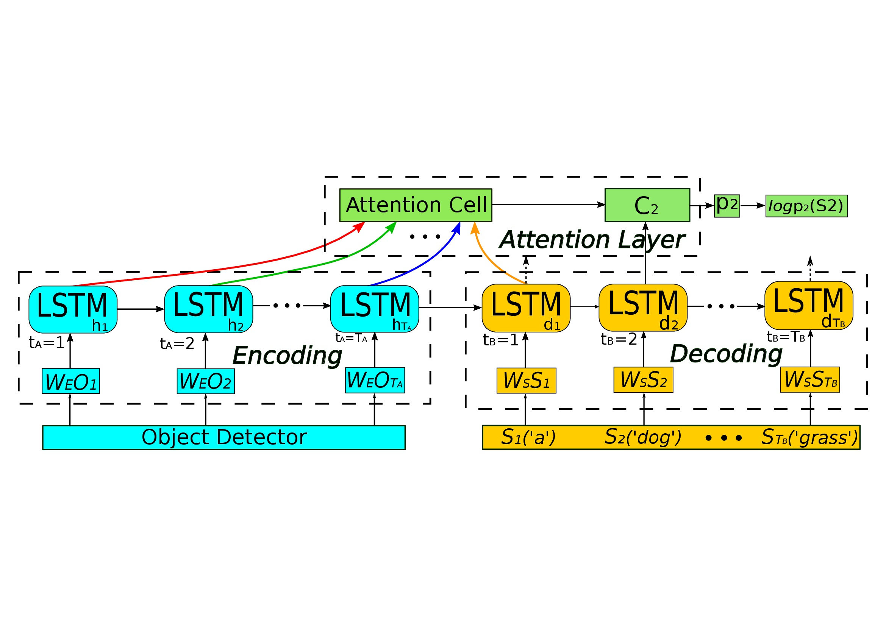
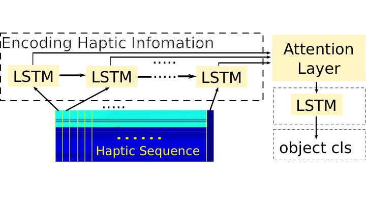
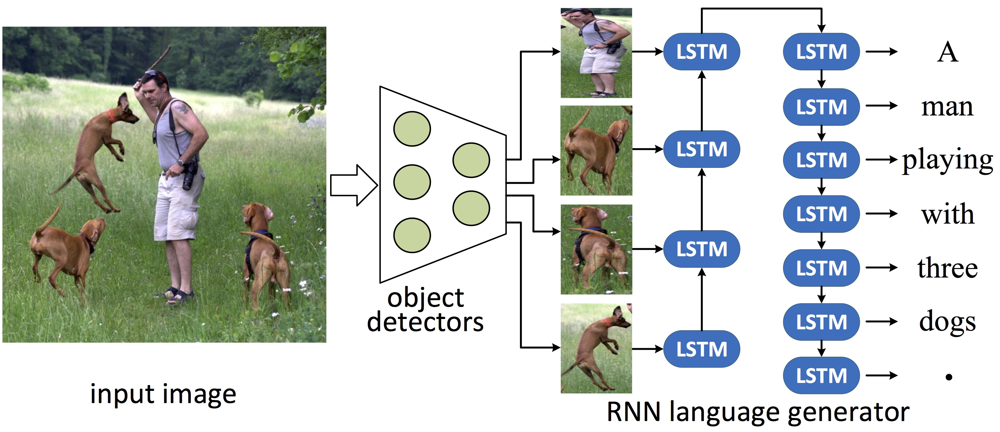
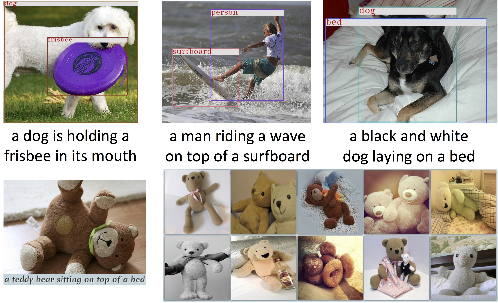
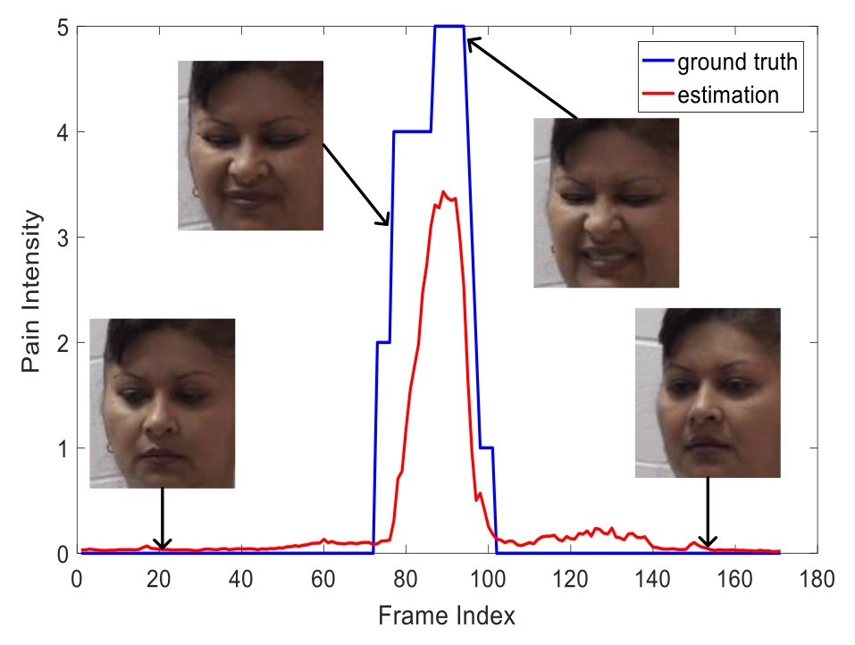
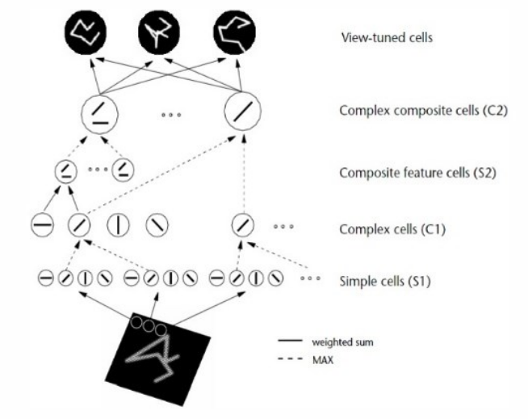
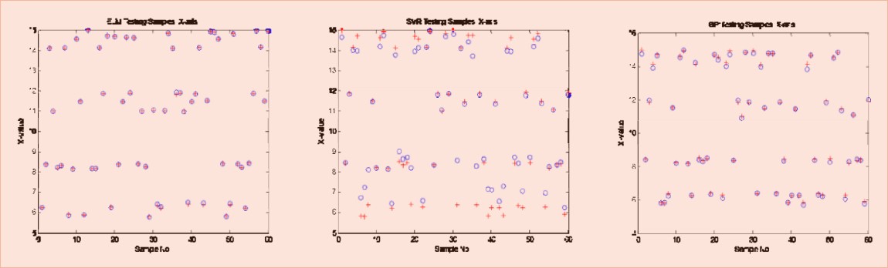

Chang Liu
Tsinghua Computer Science Ph.D. student
cliu13 _at_ mails.tsinghua.edu.cn
BIO. I am a Ph.D. candidate at Department of Computer Science, Tsinghua University, advised by Fuchun Sun. Before that, I got my bachelor degree at the Department of Computer Science, Harbin Institute of Technology. During 2016.10 to 2017.10, I join the CCVL group as a visiting scholar, advised by Alan Yuille. My general research interests include multimodal modeling deep learning methods. In particular, I'm interested in the architectures of convolutional neural networks and recurrent neural networks, and their intersections in computer vision and natural language processing. I'm also interested in modeling time-series like haptic stream for object recognition, video stream for scene understanding, etc. Download CV
TIMELINE.
2016.10-2017.10: Visiting Scholar at CCVL, Johns Hopkins Univeristy. Adviser: Alan Yuille.
2015.6-2016.6: Microsoft Research Asia Internship Multimedia Search and Mining. Adviser: Changhu Wang.
2014.9-2014.10: Joint Training Ph.D. Student at University of Hamburg. Adviser: Jianwei Zhang.
2013.8-2018.6: Ph.D. Candidate at Computer Science, Tsinghua University. Adviser: Fuchun Sun
2011.2-2011.7: Visiting Student at Computer Science, Zhejiang University
2009.8-2013.6: Bachelor of Engineering at Computer Science, Harbin Institute of Technology
News.
• August 2017: I'll attend IJCAI 2017 in Melbourne, Australia. I'll present our work "MAT: A Multimodal Attentive Translator for Image Captioning" orally. See you there!
• July 2017: Our paper "Haptic Object Recognition: A Recurrent Approach" has been accepted to IROS 2017!
• May 2017: Our paper "MMT: A Multimodal Translator for Image Captioning" has been accepted to ICANN 2017!
• May 2017: Our paper "Transferring Face Verification Nets To Pain and Expression Regression" has been accepted to ICIP 2017!
• April 2017: Our paper "MAT: A Multimodal Attentive Translator for Image Captioning" has been accepted to IJCAI 2017!
TIMELINE.
2016.10-2017.10: Visiting Scholar at CCVL, Johns Hopkins Univeristy. Adviser: Alan Yuille.
2015.6-2016.6: Microsoft Research Asia Internship Multimedia Search and Mining. Adviser: Changhu Wang.
2014.9-2014.10: Joint Training Ph.D. Student at University of Hamburg. Adviser: Jianwei Zhang.
2013.8-2018.6: Ph.D. Candidate at Computer Science, Tsinghua University. Adviser: Fuchun Sun
2011.2-2011.7: Visiting Student at Computer Science, Zhejiang University
2009.8-2013.6: Bachelor of Engineering at Computer Science, Harbin Institute of Technology
News.
• August 2017: I'll attend IJCAI 2017 in Melbourne, Australia. I'll present our work "MAT: A Multimodal Attentive Translator for Image Captioning" orally. See you there!
• July 2017: Our paper "Haptic Object Recognition: A Recurrent Approach" has been accepted to IROS 2017!
• May 2017: Our paper "MMT: A Multimodal Translator for Image Captioning" has been accepted to ICANN 2017!
• May 2017: Our paper "Transferring Face Verification Nets To Pain and Expression Regression" has been accepted to ICIP 2017!
• April 2017: Our paper "MAT: A Multimodal Attentive Translator for Image Captioning" has been accepted to IJCAI 2017!
Publications

MAT: A Multimodal Attentive Translator for Image Captioning
We formulate the image captioning task as a multimodal translation task, by treating the image as the source 'language', and the caption as the target language. We leverage convolutional neural networks to detect the objects in the image, and use these objects to represent the source language. The model is based on recurrent neural networks, and a sequential attention layer is introduced to solve the order of sequence problem.
Chang Liu, Fuchun Sun, Changhu Wang, Feng Wang, Alan Yuille
IJCAI 2017 (Oral), [PDF]

Haptic Object Recognition: A Recurrent Approach
In this work we propose an end-to-end trainable reccurrent neural network for the task of haptic object recognition. The model takes the time-series haptic sensors data, and feed each data frame in to the encoding phase of the network. To cope with the long-term dependence of contextual information, we introduce an attention mechanism which learns to distribute attention to different hidden states of the recurrent neural networks.
Chang Liu, Fuchun Sun, Alan Yuille
IROS 2017, [PDF]

MMT: A Multimodal Translator for Image Captioning
Recent works on image captioning leverage the joint architecture of covolutional neural networks and recurrent neural networks, yet the visual information of the image can be utilized more by leveraging object-level information. In this work, we propose to enhance the visual information of the source sequence of recurrent neural networks by running object detection techiniques on the raw image, and the order of the sequence is determined by our proposed saliency score.
Chang Liu, Fuchun Sun, Changhu Wang
ICANN 2017, [PDF]

Image2text: A Multimodal Image Captioner
In this work we present a real-time caption genrating model for images. The model takes in any image and will automatically generate human-level natural language desrciption for it. In addition, the model can also detect the objects within the image at the same time. Based on the genrated caption, the model is capable of retrieving images that decribe about similar things in our datasets.
Chang Liu, Changhu Wang, Fuchun Sun, Yong Rui
ACM MM 2016, [PDF]

Transferring Face Verification Nets To Pain and Expression Regression
Limited labeled data are available for the research of estimating facial expression intensities. For instance, the ability to train deep networks for automated pain assessment is limited by small datasets with labels of patient-reported pain intensities. Fortunately, fine-tuning from a data-extensive pretrained domain, such as face verification, can alleviate this problem. In this paper, we propose a network that fine-tunes a state-of-the-art face verification network using a regularized regression loss and additional data with expression labels. In this way, the expression intensity regression task can benefit from the rich feature representations trained on a huge amount of data for face verification.
Feng Wang, Xiang Xiang, Chang Liu, et al.
ICIP 2017, [PDF]

HMAX Model: A Survey
HMAX model is a bio-inspired feedforward architecture for object recognition, which is derived from the simple and complex cell model in cortex. Although constrained by biological factors, HMAX model shows satisying performance in different research areas. This paper reviews the origin of this model, as well as the improvements and developments based on this model.
Chang Liu, Fuchun Sun
IJCANN 2015, [PDF]

Lens Distortion Correction using ELM
Lens distortion is one of the major issues in camera calibration since it causes the perspective projection of the camera model to no longer hold. Thus to eliminate lens distortion becomes an essential part of camera calibration. This paper proposes a novel method of correcting lens distortion by implementing extreme learning machine, a new learning algorithm for single-hidden layer feedforward networks. A camera calibration model which contains linear phase for calibration, and non-linear phase for lens distortion correction is introduced.
Chang Liu, Fuchun Sun
ELM 2014, [PDF]
Services and Honors
• Reviewer: The 40th International ACM SIGIR Conference on Research and Development in Information Retrieval (SIGIR2017)
• Reviewer: International Conference on Multisensor Fusion and Integration for Intelligent Systems (MFI2014)
• Scholarship under the State Scholarship Fund by China Scholarship Council, 2016
• Meritorious Winner (1st prize) MCM&ICM, 2012
• Second Prize of National English Competition for College Students, 2010
• Annual Merit Student, 2009-2010
• 5 People Scholarships during 2009 to 2012
Professional kills
• Language: C/C++, Python
• Deep learning frameworks, e.g., Tensorflow, Torch7
• English: TOEFL 106, GRE 1380+4.5